Substituição de peças avariadas
Painel frontal do relé SEL
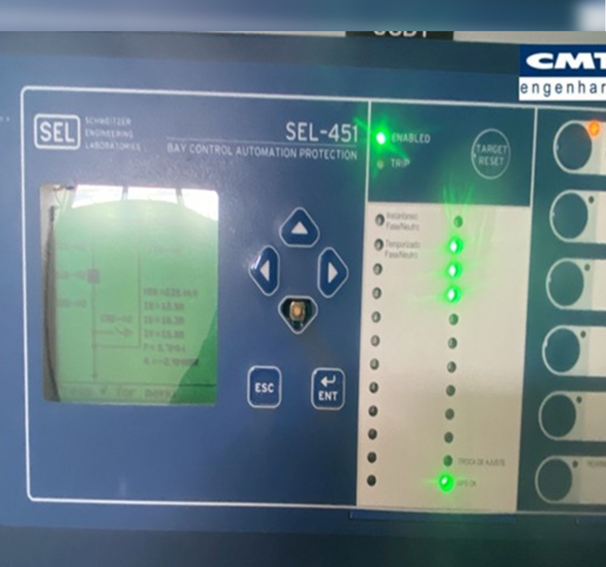
antes
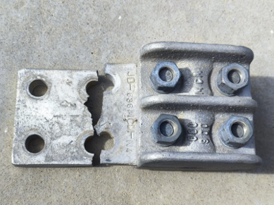
depois
Relé temporizado
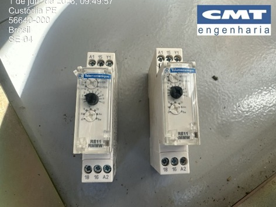

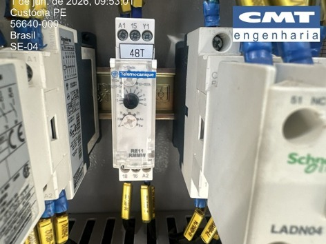
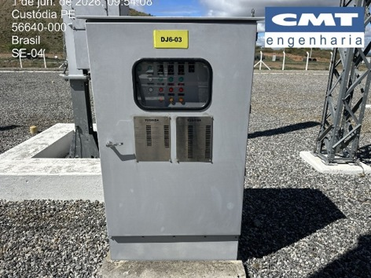
Refletor LED 200 W
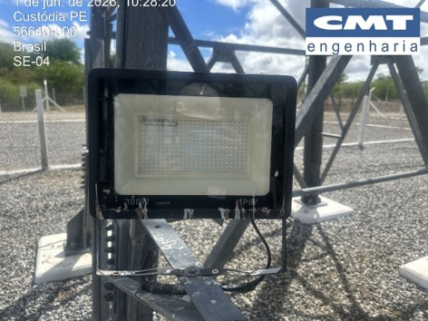
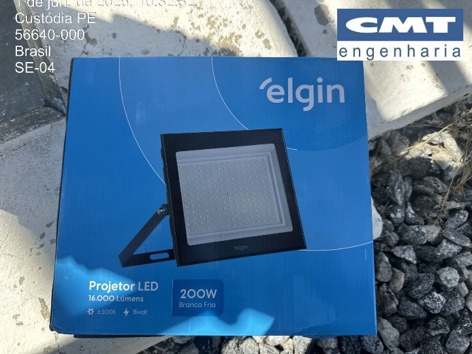
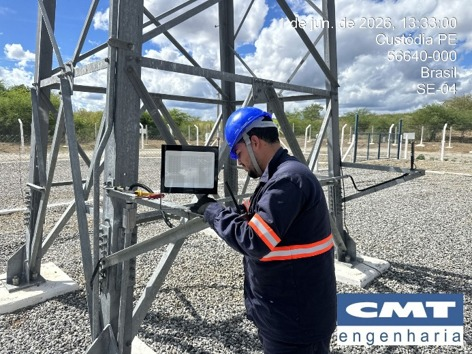
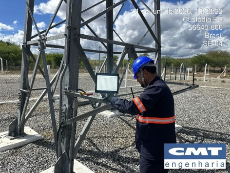
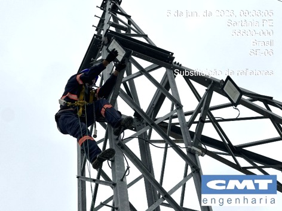
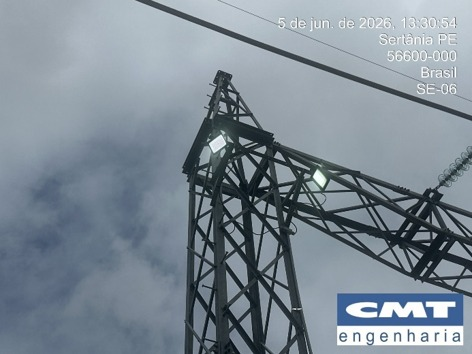
Iluminação de quadros, painéis, salas e fossos
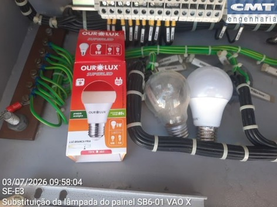
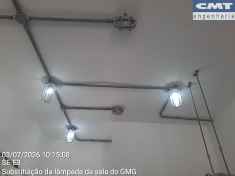
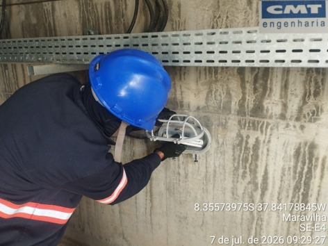
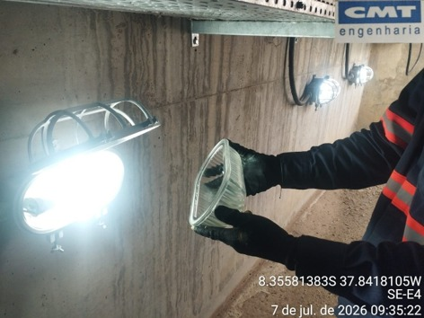
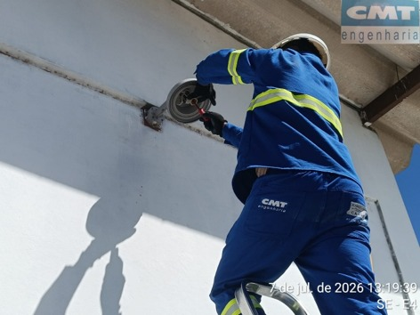
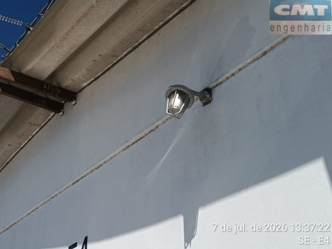
Lâmpadas da guarita da subestação
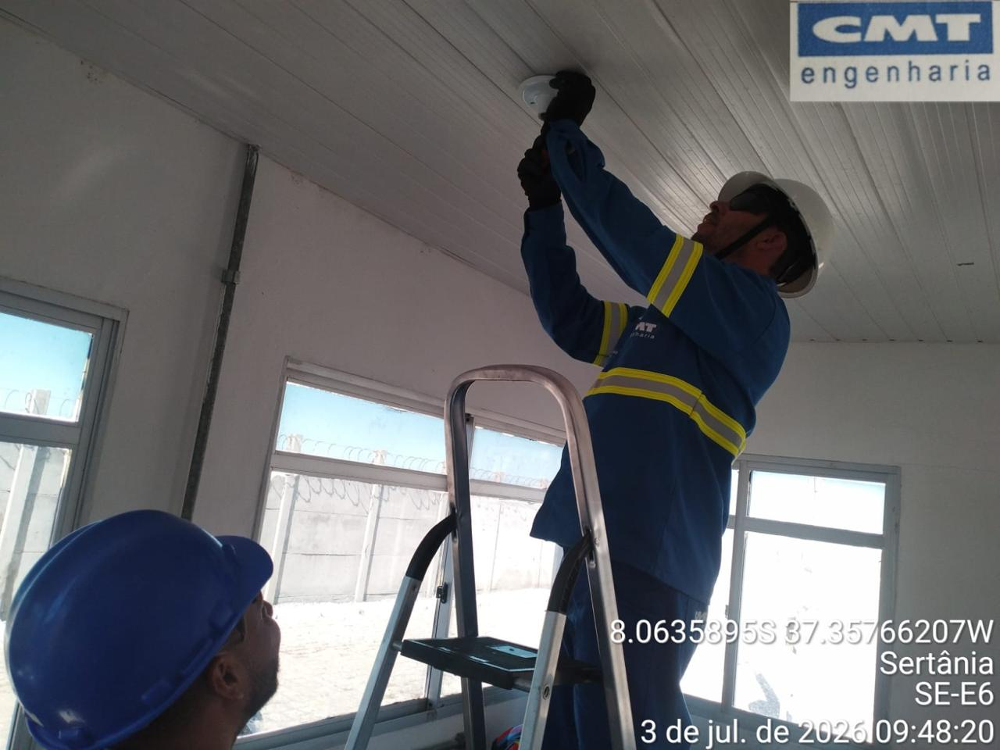
antes
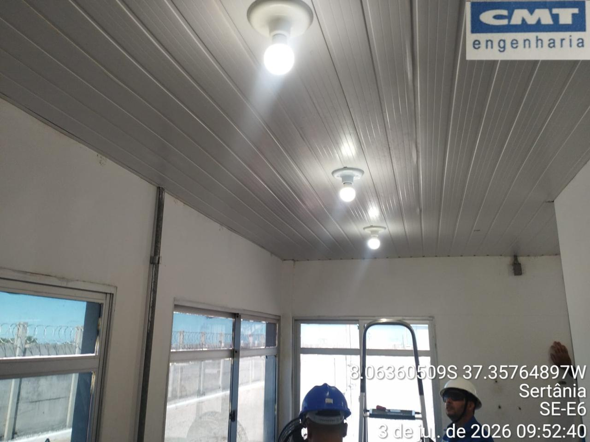
depois
Lâmpada tubular da sala de comando
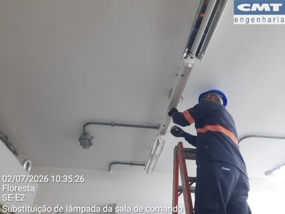
antes
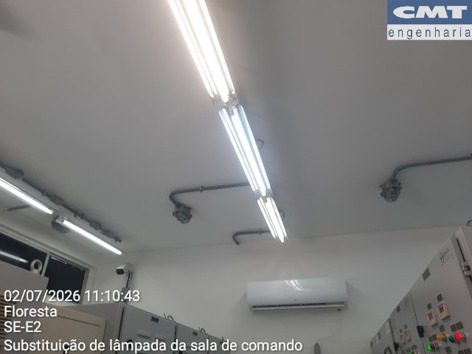
depois
Bateria interna do módulo GPS RT420
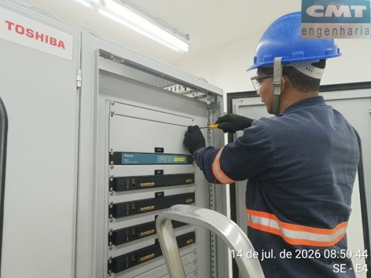
CR-2032
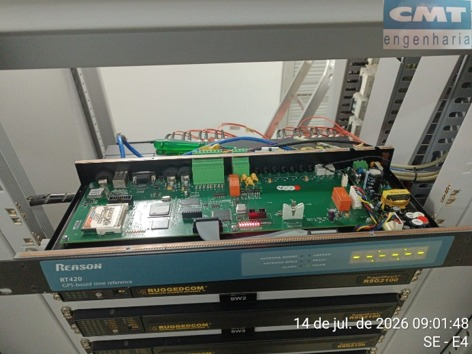
CR-2032